Historical primer (1.0.6): old API and VC6 steps are references only. Use the current tutorial and build guide. Current guide
Chapter 4 : Multiple Inheritance
Make a ship and an amphicar. (Download its source code)

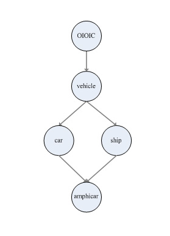
1. A vehicle has weight property; (has been achieved in the previous chapter)
2. A car inherits the vehicle's weight property; (has been achieved in the previous chapter)
3. The car has maximal load and maximal velocity properties; (has been achieved in the previous chapter)
4. A ship inherits the vehicle's weight property;
5. The ship has maximal load and maximal velocity properties;
6. An amphicar inherits the all properties of the vehicle, the car and the ship;
7. The max_load of the car is the terrestrial maximal load of the amphicar, the max_velocity of the car is the terrestrial maximal velocity of the amphicar;
8. The max_load of the ship is the aquatic maximal load of the amphicar, the max_velocity of the ship is the aquatic maximal velocity of the amphicar.
Step 1: Create a "ship" and an "amphicar" nodes of GO in "Factory" folder.
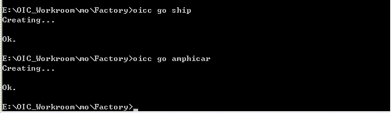
Step 2: Insert the ship and the amphicar into the "Factory" project.

Step 3: Include the "../go.h" in the "ship.h" and the "amphicar.h" files: #include "../go.h"。
Step 4: Separately in the <ibn> labels of the ship and the amphicar, change their IBN.
The ship's IBN is the vehicle.

The IBNs of the amphicar are the car and the ship.

Step 5: In the "ship.h" file, add a "max_load" and a "max_velocity" variables of SR32 for the ship.

Step 6: In the "ho.h" file, add the "ship" in the comment behind the GET_MAXLOAD and GET_MAXVELOCITY, denotes that the ship also uses the two interaction.

Step 7: Implement the GET_MAXLOAD and the GET_MAXVELOCITY for the ship.
In the "ship.c" file, implement the GET_MAXLOAD and the GET_MAXVELOCITY in the "ship_Interact1" interface for the ship.
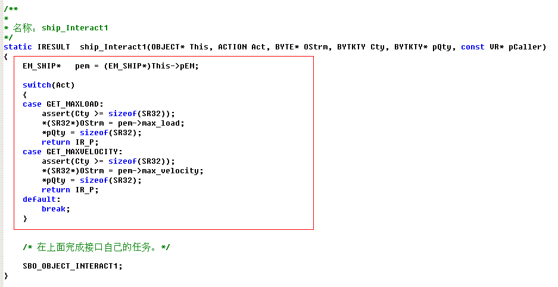
Step 8: In the "ho.h" file, define the MSNs of the ship and the amphicar.
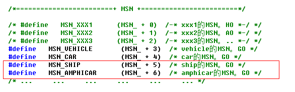
Step 9: In the "ho.c" file, show clearly to construct the ship and amphicar nodes in the "__CreateObject__" function.


Step 10: Construct the Factory node with oicc.
The CRT functions of the ship and the amphicar have been in their respective <crt>.
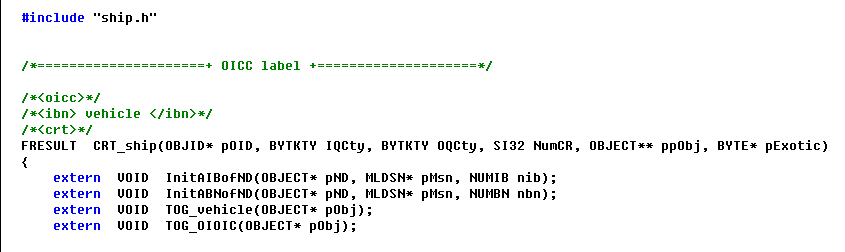
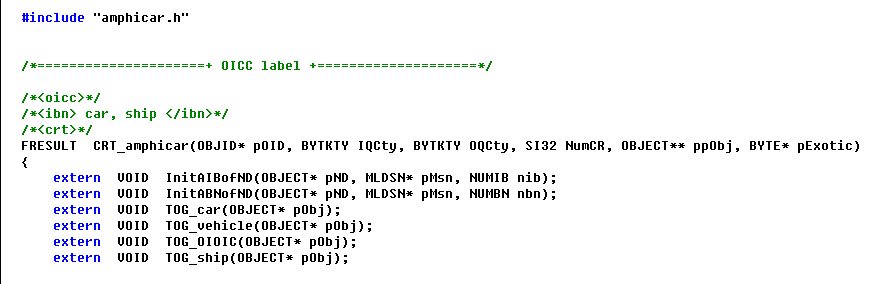
Step 11: Include required head file(s) in the "ship.c" and the "amphicar.c" files, and forwards declare their own TOG function.


Step 12: Initialize the properties value of the ship and that of the amphincar in their respective "Open" interface.

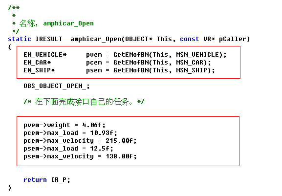
Step 13: Define four interactions of AC1 for the amphicar.

Step 14: Implement the four interactions for the amphicar.
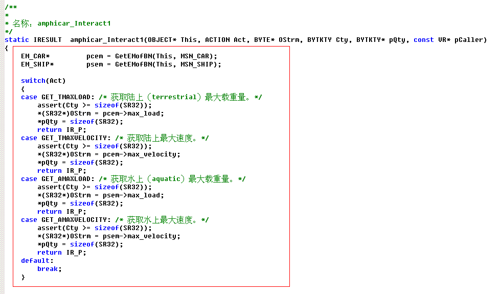
Step 15: Define a variable of object pointer for the ship and one for the amphicar.
In the "ho.c" file, define "g_pShip" and "g_pAmphicar" variables of pointer.
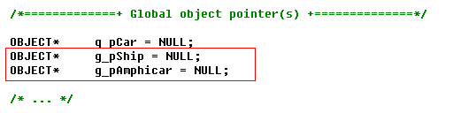
Externally declare the two variables in the "main.c" file.

Step 16: In the "Main.c" file, write the code of creating the ship and the amphicar and printing their properties value in the "Main" function.
1. Dynamically create the ship and the amphicar objects.

2. Open the ship and the amphicar objects.
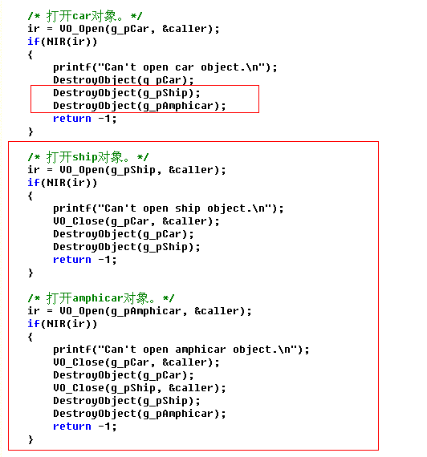
3. Print the ship's properties value.
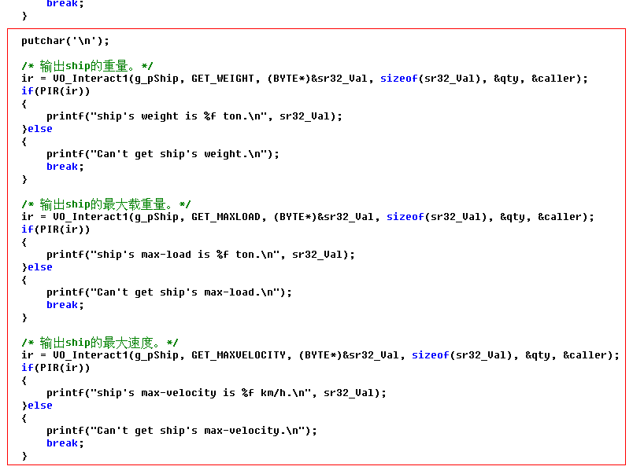
4. Print the amphicar's properties value.
Print the amphicar's weight, terrestrial maximal load and aquatic maximal load.
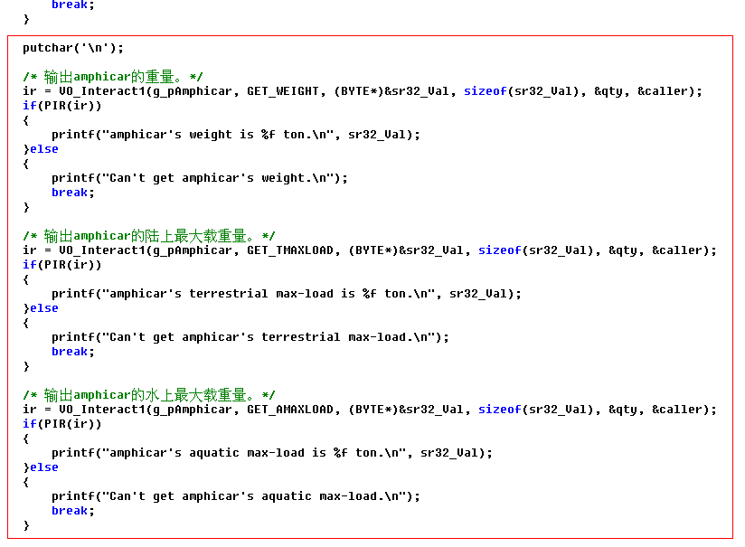
Print the amphicar's terrestrial maximal velocity and aquatic maximal velocity.
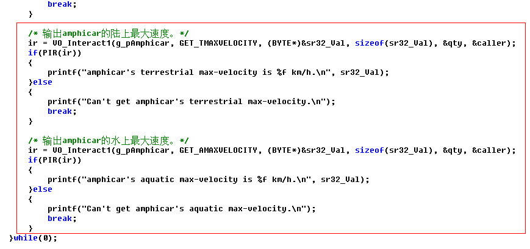
Step 17: Close and destroy the ship and the amphicar.

Step 18: In the "Close" interface of the ship and that of the amphicar, examine whether their respective object's reference count is zero.
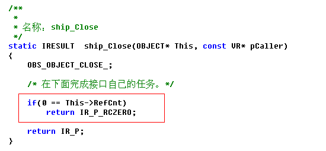

Step 19: Execute the program.
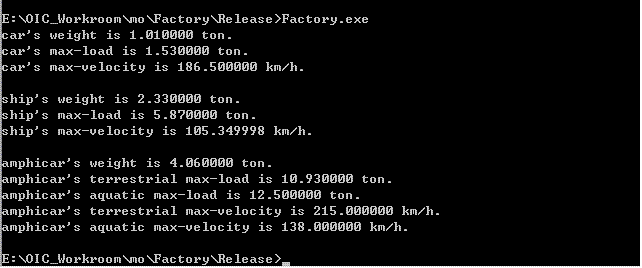
Copyright©2005-2009 赵平智. All Rights Reserved.